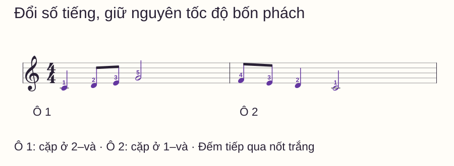
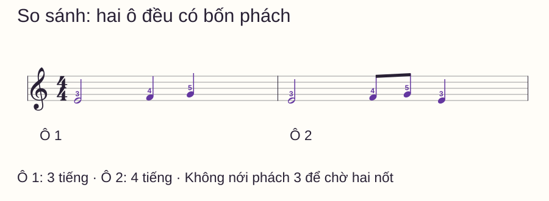
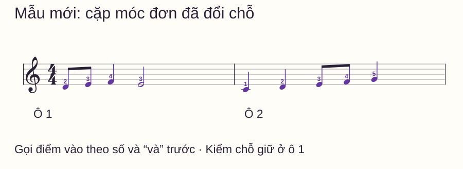

Nhịp và tiết tấu
Nốt móc đơn piano: đổi mật độ nốt mà vẫn giữ đều bốn phách
Bạn chơi đều một nốt mỗi phách, nhưng gặp hai móc đơn thì cả câu nhanh lên. Đến nốt trắng, tay lại chậm xuống như cần chờ cho âm “xong”. Như vậy tốc độ đang bị số tiếng đàn kéo đi.
Bạn chơi đều một nốt mỗi phách, nhưng gặp hai móc đơn thì cả câu nhanh lên. Đến nốt trắng, tay lại chậm xuống như cần chờ cho âm “xong”. Như vậy tốc độ đang bị số tiếng đàn kéo đi.
Nếu chưa rõ cách đếm “1 và 2 và”, hãy ôn bài đếm nhịp trước. Bài này đi tiếp bằng câu có cao độ và ngón cụ thể: cặp móc đơn đổi vị trí, nốt trắng vẫn giữ đủ và số phách không thay đổi. Chỉ dùng tay phải để nghe rõ nhiệm vụ thời gian.
Trả lời nhanh
Trong bài 4/4 với phách đen, một nốt móc đơn dài nửa phách; hai móc đơn thẳng chia đều một phách. Đếm “1 và 2 và 3 và 4 và” với tám phần bằng nhau, nhưng giữ các số 1–4 ở tốc độ cũ. Khi một nốt đen đổi thành hai móc đơn, chỉ số điểm phát âm tăng, không thêm phách. Hãy tập câu xen nốt đen, cặp móc đơn và nốt trắng: chuẩn bị cặp trước khi tới nó, rồi tiếp tục đếm trong lúc giữ nốt dài. Kiểm bằng mẫu có cặp đổi chỗ, thay vì chỉ lặp mẫu đã thuộc.
Đọc cặp móc đơn trên sheet
Móc đơn có đầu nốt đặc, thân và một móc; khi ghép nhóm, nét nối thay cho từng móc. Cặp nối trong các hình dưới nằm trong một phách. Open Music Theory — Beams giải thích vai trò nhóm nốt trong việc làm rõ phách và phần chia.
Trong bài này, nốt đen = hai phần “số–và”, nốt trắng = bốn phần, móc đơn = một phần. Giới hạn là móc đơn thẳng trong nhịp đơn 4/4; chưa dùng swing, liên ba hoặc cách cảm nhận 6/8.
Câu đầu: cặp chuyển từ phách 2 sang phách 1
C4 là Đô giữa. Tay phải ngón 1–5 trên C4–D4–E4–F4–G4. Bỏ pedal. Chọn tốc độ mà bạn gọi được cặp nốt trước khi đàn, có thể chưa bật metronome ở lượt học nốt.

| Ô | 1 | và | 2 | và | 3 | và | 4 | và |
|---|---|---|---|---|---|---|---|---|
| 1 | C4 | Giữ | D4 | E4 | G4 | Giữ | Giữ | Giữ |
| 2 | F4 | E4 | D4 | Giữ | C4 | Giữ | Giữ | Giữ |
Các tên nốt là điểm bắt đầu âm, “giữ” nghĩa không bấm lại. G4 ô 1 bắt đầu ở 3, kéo dài tới đầu ô 2; lúc ấy chuyển sang F4. C4 cuối câu giữ đủ phách 3–4 rồi nhả ở số 1 tưởng tượng của ô sau. Các mẫu chưa yêu cầu một sắc thái legato hoặc staccato riêng; đừng để thao tác nhấn lại làm thay đổi điểm vào đã ghi.
Tập chỗ đổi mật độ, không chỉ riêng hai nốt nhanh
Đầu tiên gõ tiết tấu trên một phím quen. Tới phách 2 ô 1, đánh vào “2” và “và”, sau đó G4 ở số 3 vẫn tới đúng mốc. Đừng thêm một khoảng chờ sau E4 để cảm thấy cặp đã kết thúc.
Đưa lại cao độ, tập riêng C4–D4–E4–G4 và tiếp tục đếm tới hết ô. Sau đó nối phách 3–4 ô 1 với 1–2 ô 2: từ một G4 dài sang F4–E4 ngắn, rồi D4 dài một phách. Đây là chỗ dễ kéo chậm hoặc vội vì mật độ đổi ngay tại vạch ô.
Nếu dùng máy, đặt một click cho mỗi phách đen và đếm ô dẫn vào. Tiếng ở “và” nằm giữa hai click. Chưa cần chuyển máy sang tám click mỗi ô; muốn làm vậy phải biết mỗi click mới đại diện nửa phách và tốc độ click gấp đôi tốc độ phách.
Phép so sánh: thêm một tiếng không kéo dài ô

Chơi hai ô liên tiếp, lặp cùng tempo. G4 ở ô 1 bắt đầu tại 4; E4 cuối ô 2 cũng bắt đầu tại 4. Nếu E4 ấy đến muộn, kiểm cặp F4–G4 tại “3–và”: bạn có đang dành trọn một phách cho từng nốt không?
Nếu câu nhanh lên sau cặp, đọc thành lời cả “4 và” thay vì chỉ gọi tên các nốt. Giữ nốt trắng ở đầu ô giúp bạn kiểm việc tiếp tục đếm ngay cả lúc không có âm mới.
Mẫu mới: tìm cặp trước khi đàn

Hãy gọi các điểm vào của mỗi ô; cho biết phách nào chỉ giữ ở ô 1. Đếm một ô dẫn vào rồi đàn. Nếu vướng tìm phím, gõ riêng tiết tấu để biết lỗi nằm ở thời gian hay cao độ.
Đáp án mẫu mới
Ô 1: D4 ở 1, E4 ở “và” của 1, F4 ở 2, E4 ở 3 giữ qua 4. Ô 2: C4 ở 1, D4 ở 2, E4 ở 3, F4 ở “và” của 3, G4 ở 4. Tổng chín điểm phát âm trên tám phách; mỗi ô vẫn bốn phách.
Routine mười phút và điểm cần ghi
- 0–2 phút: chỉ cặp móc đơn và nốt trắng, đọc thời gian chưa đàn.
- 2–4 phút: gõ câu đầu trên một phím rồi thêm cao độ.
- 4–6 phút: nối nốt trắng cuối ô 1 sang cặp đầu ô 2.
- 6–8 phút: chơi hai ô so sánh, kiểm phách 4 có đến đều không.
- 8–10 phút: thử mẫu mới và ghi vị trí lệch theo ô, phách, phần “và”.
| Biểu hiện | Kiểm và sửa |
|---|---|
| Hai móc đơn làm dài thêm một phách | Chia một phách thành hai phần, không đếm hai số mới |
| Cặp thành dài–ngắn | Gõ tám phần đều ở tempo vừa sức rồi trả lại tiết tấu |
| Nốt trắng bị bấm lại | Đánh dấu điểm vào, giữ qua các phần còn lại |
| Chỉ sai lúc đổi cao độ | Giữ tiết tấu trên một phím, chuẩn bị cặp nốt riêng rồi ghép |
Bạn có thể chuyển bước khi giữ được mốc số đều ở cả câu đầu và mẫu mới. Chưa cần ghép thêm tay trái; đó sẽ là một bài phối hợp riêng. Phách và tiết tấu giúp kiểm lại đồng hồ bên trong; bài metronome hướng dẫn nghe ô dẫn vào và phân biệt click với điểm đánh.
Muốn kiểm thao tác kết thúc âm, thử dấu lặng khi tay kia vẫn chơi. Sau khi chia đều nửa phách, bạn có thể học nốt chấm dôi để đặt tiếng tiếp theo giữa phách.
Câu hỏi thường gặp
Nốt móc đơn luôn bằng nửa phách không?
Trong 4/4 với phách đen ở đây, đúng. Quan hệ theo số phách thay đổi khi đơn vị phách thay đổi; đọc số chỉ nhịp và cách đặt click trước.
Hai nốt nối một gạch có phải nốt đen không?
Không. Đó vẫn là hai móc đơn, mỗi nốt có điểm bắt đầu riêng. Tổng thời gian của cặp bằng một nốt đen trong bài này.
Phải đánh chữ “và” nhẹ hơn số không?
“Và” chỉ là mốc thời gian. Cường độ còn phụ thuộc câu nhạc và chỉ dẫn; bài này chưa yêu cầu một quy tắc nhấn mạnh cố định.
Vì sao tập toàn móc đơn được nhưng xen nốt trắng lại sai?
Mẫu đều có nhiều tiếng nhắc nhịp. Khi chuyển sang giữ, bạn cần tiếp tục chia bên trong thay vì đợi âm tắt rồi mới đếm tiếp.
Có nên bật click ở mọi nửa phách?
Có thể dùng tạm để kiểm sự chia đều nếu cấu hình được đúng. Sau đó thử lại click từng phách để biết bạn có tự chia được hay chỉ bám từng tiếng máy.
Có cần chơi nhanh mới ra móc đơn không?
Không. Móc đơn là quan hệ trường độ. Ở tempo chậm, chúng vẫn dài bằng nửa nốt đen; tốc độ cao không thay việc đọc đúng tỷ lệ.
Nguồn và ghi chú biên soạn
- Open Music Theory — Rhythmic values: đối chiếu giá trị nốt.
- Open Music Theory — Beams and borrowed divisions: đối chiếu vai trò nối nhóm theo phách, không lấy mẫu minh họa của nguồn.
- Kiểm ngày 02/11/2026. Ba câu luyện, bảng thời gian, hình và câu hỏi tự kiểm là nội dung gốc. Chưa có giáo viên độc lập duyệt hoặc thử nghiệm học viên. Phạm vi mới của bài là đổi mật độ trong giai điệu, sau kiến thức đếm cơ bản.